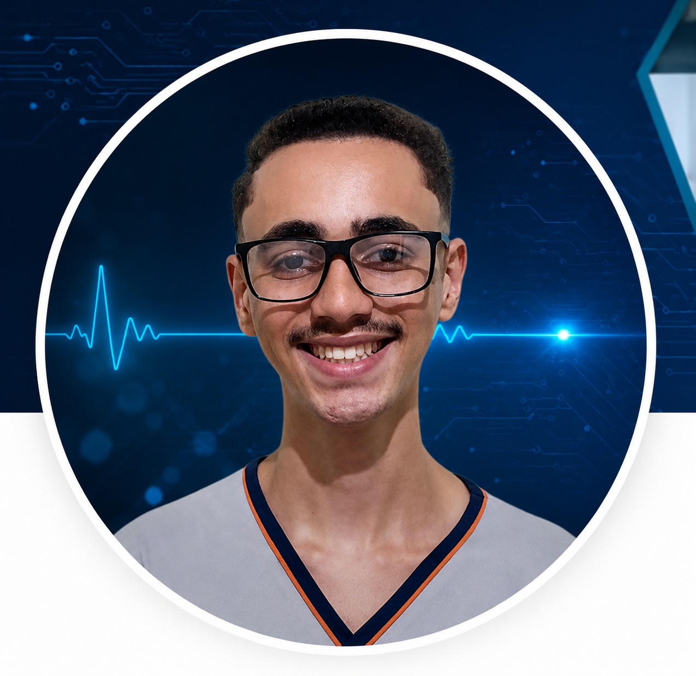

O problema
Eye trackers comerciais podem apresentar custo elevado, dificultando o acesso a tecnologias assistivas.
Uma tecnologia assistiva que utiliza webcam, visão computacional, inteligência artificial e reconhecimento de gestos faciais para transformar movimentos oculares em comandos no computador.
O Eye Tracker CK² busca oferecer uma alternativa de baixo custo para controle do computador utilizando equipamentos comuns, como uma webcam.
Eye trackers comerciais podem apresentar custo elevado, dificultando o acesso a tecnologias assistivas.
Utilizar webcam, visão computacional, inteligência artificial e gestos faciais para controlar o computador.
Ampliar as possibilidades de interação com computadores para pessoas com limitações motoras.
O sistema transforma imagens capturadas pela webcam em informações utilizadas para controlar o computador.
Nesta seção será apresentado um vídeo demonstrando o funcionamento do Eye Tracker CK².
O vídeo do programa funcionando será adicionado aqui.
Baixe a versão executável do programa para Windows e comece a utilizar o sistema.
Arquivo executável (.exe) para instalação do programa no computador.
Faça uma verificação aproximada das características do seu computador diretamente pelo navegador.
Siga o passo a passo abaixo para instalar e configurar o Eye Tracker CK².
Clique no botão de download e salve o arquivo .exe no seu computador.
Abra o arquivo .exe baixado e siga as instruções apresentadas pelo instalador.
Certifique-se de que o programa possui acesso à webcam utilizada.
Sente-se em uma posição confortável e mantenha seu rosto visível para a webcam.
Execute o processo de calibração para adaptar o rastreamento ao usuário.
Após a calibração, movimente os olhos para controlar o cursor e utilize os gestos configurados pelo sistema.
O projeto utiliza ferramentas de programação, visão computacional e automação.
Clique esquerdo.
Clique direito.
Duplo clique.
Drag — em desenvolvimento.
Scroll — em desenvolvimento.
Menu — em desenvolvimento.
Estudantes do CEFET-MG envolvidos no desenvolvimento do Eye Tracker CK².

KELVIN';" >IA · Arquitetura · Documentação · Testes · Integração
Testes · Documentação
Pesquisa em IA · Testes · Documentação
Doutor em Engenharia Elétrica · Instrumentação biomédica · Eletrônica · Processamento de sinais.

Doutora em Engenharia Mecânica (Bioengenharia) · Sistemas embarcados · Tecnologias assistivas.
Pesquisadores e projetos utilizados como referência durante o desenvolvimento do Eye Tracker CK².
Projeto open source relacionado ao controle do mouse pelos olhos, utilizado como referência de estudo para o Eye Tracker CK².
Ver referência ↗Projeto de interface controlada pelos olhos, utilizado como referência para a pesquisa e desenvolvimento da interface do sistema.
Ver referência ↗